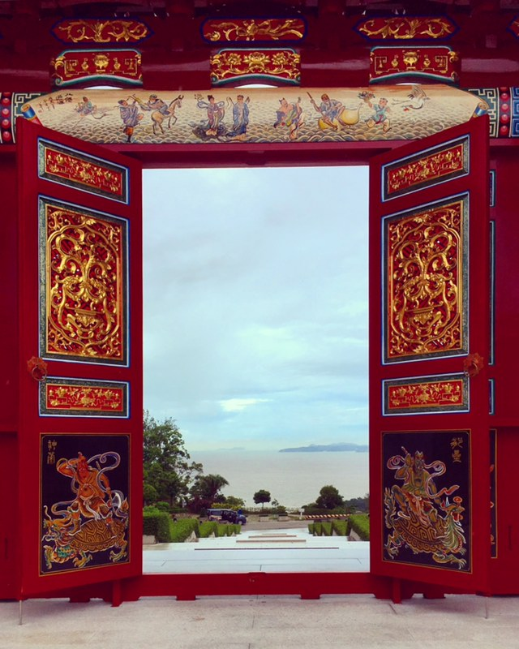
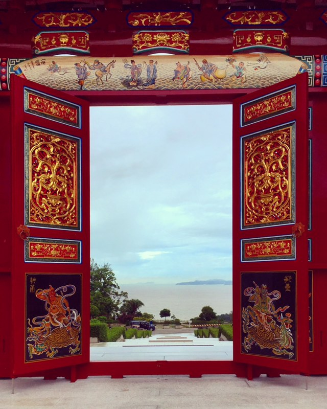

Located on the hill top of Coloane cultural village, A-ma temple readily makes you feel spiritual and instantly connects soul with the auspicious structure. A typical Chinese temple lets you get closer to the local tradition.
Exploring city's hidden gem conjoins you with the local culture and tradition. A-ma temple is usually an underestimated tourist spot, but it actually makes you feel calmness of the nature. One can reach to the hill either by hiking or by free shuttle bus operated by A-ma temple trust once every half an hour.


A-ma temple in Coloane village gives a perfect blend
of hike in the lap of nature and blissful view
of the south China sea on the other side!! The greenery on the way and small hiking trails makes it a perfect weekend destination. On reaching the top a bright red colored, magnificent structure of the temple makes one speechless. The pillars and walls of the temple are carved with different types of dragons depicting the Chinese aura. The tall and spiral incense sticks placed in front of the temple instantly attracts foreigners.


 

Just above the temple, is the 20m high white jade statue of goddess A-ma, from where Macau got it’s name. The white color statue gives feeling of serenity and view of flowing Pearl Delta river adds another feather to the natural beauty of Macau.

- How to reach?
- Entrance: Seac Pai Van Park
- Bus no.: 25, 21A and 50
- Bus stop: Estrada de Seac Pai Van
- Trail length: 4-5km
- Shuttle bus of runs every 30min (8am to 6pm) from the ornamental entrance gate at Estrada de Seac Pai Van.
- Price range: Free